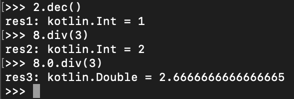
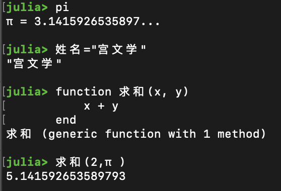
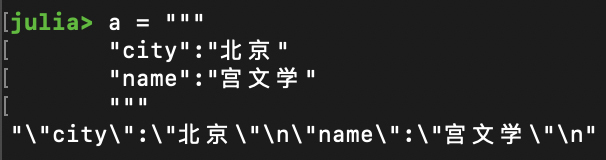
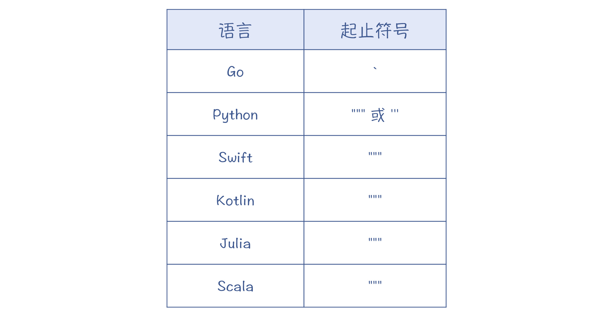
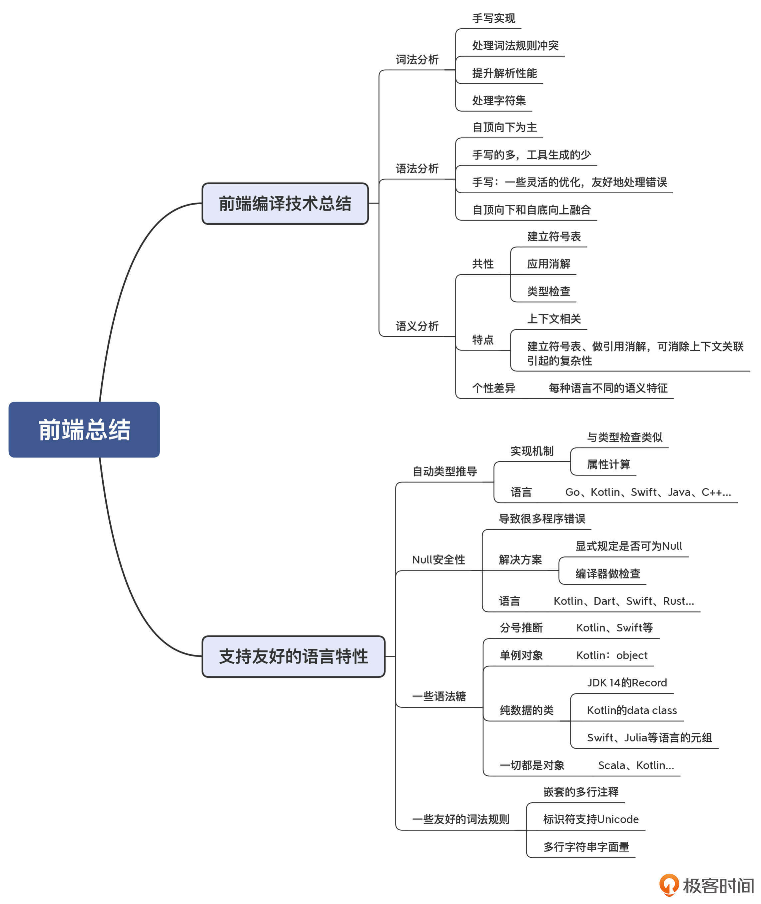

- 00 学习指南 如何学习这门编译原理实战课？.md.html
- 00 开篇词 在真实世界的编译器中游历.md.html
- 01 编译的全过程都悄悄做了哪些事情？.md.html
- 02 词法分析：用两种方式构造有限自动机.md.html
- 03 语法分析：两个基本功和两种算法思路.md.html
- 04 语义分析：让程序符合语义规则.md.html
- 05 运行时机制：程序如何运行，你有发言权.md.html
- 06 中间代码：不是只有一副面孔.md.html
- 07 代码优化：跟编译器做朋友，让你的代码飞起来.md.html
- 08 代码生成：如何实现机器相关的优化？.md.html
- 09 Java编译器（一）：手写的编译器有什么优势？.md.html
- 10 Java编译器（二）：语法分析之后，还要做些什么？.md.html
- 11 Java编译器（三）：属性分析和数据流分析.md.html
- 12 Java编译器（四）：去除语法糖和生成字节码.md.html
- 13 Java JIT编译器（一）：动手修改Graal编译器.md.html
- 14 Java JIT编译器（二）：Sea of Nodes为何如此强大？.md.html
- 15 Java JIT编译器（三）：探究内联和逃逸分析的算法原理.md.html
- 16 Java JIT编译器（四）：Graal的后端是如何工作的？.md.html
- 17 Python编译器（一）：如何用工具生成编译器？.md.html
- 18 Python编译器（二）：从AST到字节码.md.html
- 19 Python编译器（三）：运行时机制.md.html
- 20 JavaScript编译器（一）：V8的解析和编译过程.md.html
- 21 JavaScript编译器（二）：V8的解释器和优化编译器.md.html
- 22 Julia编译器（一）：如何让动态语言性能很高？.md.html
- 23 Julia编译器（二）：如何利用LLVM的优化和后端功能？.md.html
- 24 Go语言编译器：把它当作教科书吧.md.html
- 25 MySQL编译器（一）：解析一条SQL语句的执行过程.md.html
- 26 MySQL编译器（二）：编译技术如何帮你提升数据库性能？.md.html
- 27 课前导读：学习现代语言设计的正确姿势.md.html
- 28 前端总结：语言设计也有人机工程学.md.html
- 29 中端总结：不遗余力地进行代码优化.md.html
- 30 后端总结：充分发挥硬件的能力.md.html
- 31 运行时（一）：从0到语言级的虚拟化.md.html
- 32 运行时（二）：垃圾收集与语言的特性有关吗？.md.html
- 33 并发中的编译技术（一）：如何从语言层面支持线程？.md.html
- 34 并发中的编译技术（二）：如何从语言层面支持协程？.md.html
- 35 并发中的编译技术（三）：Erlang语言厉害在哪里？.md.html
- 36 高级特性（一）：揭秘元编程的实现机制.md.html
- 37 高级特性（二）：揭秘泛型编程的实现机制.md.html
- 38 综合实现（一）：如何实现面向对象编程？.md.html
- 39 综合实现（二）：如何实现函数式编程？.md.html
- 40 成果检验：方舟编译器的优势在哪里？.md.html
- 不定期加餐1 远程办公，需要你我具备什么样的素质？.md.html
- 不定期加餐2 学习技术的过程，其实是训练心理素质的过程.md.html
- 不定期加餐3 这几年，打动我的两本好书.md.html
- 不定期加餐4 从身边的牛人身上，我学到的一些优秀品质.md.html
- 不定期加餐5 借助实例，探究C++编译器的内部机制.md.html
- 划重点 7种编译器的核心概念与算法.md.html
- 期末答疑与总结 再次审视学习编译原理的作用.md.html
- 热点问题答疑 如何吃透7种真实的编译器？.md.html
- 用户故事 易昊：程序员不止有Bug和加班，还有诗和远方.md.html
- 知识地图 一起来复习编译技术核心概念与算法.md.html
- 结束语 实战是唯一标准！.md.html
- 捐赠
28 前端总结：语言设计也有人机工程学
你好，我是宫文学。
正如我在上一讲的“课程导读”中所提到的，在“现代语言设计篇”，我们会开始探讨现代语言设计中的一些典型特性，包括前端、中后端、运行时的特性等，并会研究它们与编译技术的关系。
今天这一讲，我先以前面的“真实编译器解析篇”所分析的7种编译器作为基础，来总结一下它们的前端技术的特征，为你以后的前端工作做好清晰的指引。
在此基础上，我们还会进一步讨论语言设计方面的问题。近些年，各种新语言都涌现出了一个显著特征，那就是越来越考虑对程序员的友好性，运用了人机工程的思维。比如说，自动类型推导、Null安全性等。那么在这里，我们就一起来分析一下，要支持这些友好的语法特征，在编译技术上都要做一些什么工作。
好，首先，我们就来总结一下各个编译器的前端技术特征。
前端编译技术总结
通过前面课程中对7个编译器的解读分析，我们现在已经知道了，编译器的前端有一些共性的特征，包括：手写的词法分析器、自顶向下分析为主的语法分析器和差异化的语义分析功能。
手写的词法分析器
我们分析的这几个编译器，全部都采用了手写的词法分析器。主要原因有几个：
- 第一，手写的词法分析实现起来比较简单，再加上每种语言的词法规则实际上是大同小异的，所以实现起来也都差不多。
- 第二，手写词法分析器便于做一些优化。典型的优化是把关键字作为标识符的子集来识别，而不用为识别每个关键字创建自动机。V8的词法分析器还在性能上做了调优，比如判断一个字符是否是合法的标识符字符，是采用了查表的方法，以空间换性能，提高了解析速度。
- 第三，手写词法分析器便于处理一些特殊的情况。在 MySQL的词法分析器中，我们会发现，它需要根据当前字符集来确定某个字符串是否是合法的Token。如果采用工具自动生成词法分析器，则不容易处理这种情况。
结论：如果你要实现词法分析器，可以参考这些编译器，来实现你自己手写的版本。
自顶向下分析为主的语法分析器
在“解析篇”中，我们还见到了多个语法分析器。
手写 vs 工具生成
在前面解析的编译器当中，大部分都是手写的语法分析器，只有Python和MySQL这两个是用工具生成的。
一方面，手写实现能够在某些地方做一些优化的实现，比如在Java语言里，我们可以根据需要，预读一到多个Token。另外，手写实现也有利于编译错误的处理，这样可以尽量给用户提供更友好的编译错误信息，并且当一个地方发生错误以后，也能尽量不影响对后面的语句的解析。手写的语法分析器在这些方面都能提供更好的灵活性。
另一方面，Python和MySQL的编译器也证明了，用工具生成的语法分析器，也是完全可以用于高要求的产品之中的。所以，如果你的项目时间和资源有限，你要优先考虑用工具生成语法分析器。
自顶向下 vs 自底向上
我们知道，语法分析有两大算法体系。一是自顶向下，二是自底向上。
从我们分析过的7种编译器里可以发现，自顶向下的算法体系占了绝对的主流，只有MySQL的语法分析器，采用的是自底向上的LALR算法。
而在自顶向下的算法中，又几乎全是采用了递归下降算法，Java、JavaScript和Go三大语言的编译器都是如此。并且对于左递归这个技术点，我们用标准的改写方法就可以解决。
不过，我们还看到了自顶向下算法和自底向上算法的融合。Java语言和Go语言在处理二元表达式时，引入了运算符优先级解析器，从而避免了左递归问题，并且在处理优先级和结合性的问题上，也会更加容易。而运算符优先级解析器，实际上采用的是一种LR算法。
差异化的语义分析功能
不同编译器的语义分析功能有其共性，那就是都要建立符号表、做引用消解。对于静态类型的语言来说，还一定要做类型检查。
语义分析最大的特点是上下文相关，AST加上这些上下文相关的关系，就从树变成了图。由于处理图的算法一般比较复杂，这就给引用消解带来了困难，因此我们在算法上必须采用一定的启发式规则，让算法简化。
比如，我们可以先把类型加入符号表，再去消解用到这些类型的地方：变量声明、方法声明、类继承的声明，等等。你还需要注意的是，在消解本地变量的时候，还必须一边消解，一边把本地变量加入符号表，这样才能避免形成错误的引用关系。
不过，在建立符号表，并做完引用消解以后，上下文相关导致的复杂性就被消除了。所以，后续的语义分析算法，我们仍然可以通过简单地遍历AST来实现。所以，你会看到这些编译器当中，大量的算法都是实现了Visitor模式。
另外，除了建立符号表、做引用消解和类型检查等语义分析功能，不同的编译器还要去处理自己特有的语义。比如说，Java编译器花了很多的工作量在处理语法糖上，还有对注解的处理上；Julia的编译器会去做类型推断；Python的编译器会去识别变量的作用域范围，等等。
这其中，很多的语义处理功能，都是为了支持更加友好的语言特性，比如Java的语法糖。在现代语言中，还增加了很多的特性，能够让程序员的编程工作更加容易。接下来，我就挑几个共性的特性，跟你一起探讨一下它们的实现。
支持友好的语言特性
自动类型推导、Null安全性、通过语法糖提高语法的友好性，以及提供一些友好的词法规则，等等。这些都是现代语言努力提高其友好性的表现。
自动类型推导
自动类型推导可以减少编程时与类型声明有关的工作量。我们来看看下面这几门语言，都是如何声明变量的。
C++语言是一门不断与时俱进的语言。在C++ 11中，采用了auto关键字做类型推导。比如：
int a = 10;
auto b = a; //能够自动推导b的类型是int
cout << typeid(b).name() << endl; //输出int
你可能会觉得，这看上去似乎也没啥呀，把int换成了auto好像并没有省多少事儿。但在下面这个例子中，你会发现用于枚举的变量的类型很长（std::vector<std::string>::iterator），那么你就大可以直接用一个auto来代替，省了很多事，代码也更加整洁。所以实际上，auto关键字也成为了在C++中使用枚举器的标准用法：
std::vector<std::string> vs;
for(std::vector<std::string>::iterator i=vs.begin(); i!=vs.end();i++){
//...
}
//使用auto以后，简化为：
fora(auto i=vs.begin(); i!=vs.end();i++){
//...
}
我们接着来看看其他的语言，都是如何做类型推导的。
Kotlin中用var声明变量，也支持显式类型声明和类型推导两种方式。
var a : Int = 10; //显式声明
var b = 10; //类型推导
Go语言，会用“:=” 让编译器去做类型推导：
var i int = 10; //显示声明
i := 10; //类型推导
而Swift语言是这样做的：
let a : Int = 10; //常量类型显式声明
let b = 10; //常量类型推导
var c : Int = 10; //变量类型显式声明
var c = 10; //变量类型推导
实际上，连Java语言也在Java 10版本加上了类型推导功能，比如：
Map<String, User> a = new HashMap<String, User>(); //显式声明
var b = new HashMap<String, User>(); //类型推导
你在学习了语义分析中，基于属性计算做类型检查的机制以后，就会发现实现类型推导，其实是很容易的。只需要把等号右边的初始化部分的类型，赋值给左边的变量就行了。
可以看到，在不同的编译器的实现当中，类型推导被如此广泛地接受，所以如果你要设计一门新的语言，你也一定要考虑类似的做法。
好，我们接着再来探讨下一个有趣的特性，它叫做“Null安全性”。
Null安全性
在C++和Java等语言里，会用Null引用，来表示某个变量没有指向任何对象。这个特性使得语言里充满了Null检查，否则运行时就会报错。
给你举个例子。下面这段代码中，我们想要使用student.teacher.name这个成员变量，因此程序要逐级检查student、teacher和name是否为Null。不检查又不行，检查又太啰嗦。你在自己写程序的时候，肯定也遇到过这种困扰。
if (student != null
&& student.teacher != null
&& student.teacher.name !=null){
...
}
Null引用其实是托尼·霍尔（Tony Hoare）在1960年代在设计某一门语言（ALGOL W）时引入的，后来也纷纷被其他语言所借鉴。但Hoare后来却认为，这是一个“价值亿万美元的错误”，你可以看看他在QCon上的演讲。因为大量的软件错误都是由Null引用引起的，而计算机语言的设计者本应该从源头上消除它。
其实我觉得Hoare有点过于自责了。因为在计算机语言发展的早期，很多设计决定的后果都是很难预料的，当时的技术手段也很有限。而在计算机语言已经进化了这么多年的今天，我们还是有办法消除或者减少Null引用的不良影响的。
以Kotlin为例，在缺省情况下，它不允许你把Null赋给变量，因此这些变量就不需要检查是否为Null。
var a : String = "hello";
a = null; //报编译错误
不过有的时候，你确实需要用到Null，那该怎么办？
你需要这样的声明变量，在类型后面带上问号，告诉编译器这个变量可为空：
var a : String? = "hello";
a = null; //OK
但接下来，如果你要使用a变量，就必须进行Null检查。这样，编译器会跟踪你是否做了所有的检查。
val l = b.length; //编译器会报错，因为没有做null检查
if (b != null){
println(b.length); //OK，因为已经进行了null检查
}
或者，你可以进行安全调用（Safe Call），采用“?.”操作符来访问b.length，其返回值是一个Int?类型。这样的话，即使b是Null，程序也不会出错。
var l : Int? = b?.length;
并且，如果你下一步要使用l变量的话，就要继续进行Null的检查。编译器会继续保持跟踪，让整个过程不会有漏洞。
而如果你对一个本身可能为Null的变量赋值，编译器会生成Null检查的代码。如果该变量为Null，那么赋值操作就会被取消。
在下面的示例代码中，如果student或是teacher，或者是name的值为Null，赋值操作都不会发生。这大大减少了那种啰嗦的Null检查：
student?.teacher?.name=course.getTeacherName();
你可以看到，Kotlin通过这样的机制，就大大降低了Null引用可能带来的危害，也大大减少了Null检查的代码量，简直是程序员的福音。
而且，不仅是Kotlin语言具有这个特性，Dart、Swift、Rust等新语言都提供了Null安全性。
那么，Null安全性在编译器里应该怎样实现呢？
最简单的，你可以给所有的类型添加一个属性：Nullable。这样就能区分开Int?和Int类型，因为对于后者来说，Null不是一个合法的取值。之后，你再运用正常的属性计算的方法，就可以实现Null安全性了。
接下来，我们再看看现代语言会采用的一些语法糖，让语法更友好。
一些友好的语法糖
1.分号推断
分号推断的作用是在编程的时候，让程序员省略掉不必要的分号。在Java语言中，我们用分号作为一个语句的结尾。而像Kotlin等语言，在一个语句的最后，可以加分号，也可以不加。但如果两个语句在同一行，那么就要加分号了。
2.单例对象
在程序中，我们经常使用单例的数据模式。在Java、C++等语言中，你需要写一些代码来确保只生成类的一个实例。而在Scala、Kotlin这样的语言中，可以直接声明一个单例对象，代码非常简洁：
object MyObject{
var field1...
var field2...
}
3.纯数据的类
我们在写程序的时候，经常需要处理一些纯粹的数据对象，比如数据库的记录等。而如果用传统的类，可能编写起来会很麻烦。比如，使用Java语言的话，你需要为这些类编写toString()方法、hashCode()方法、equals()方法，还要添加很多的setter和getter方法，非常繁琐。
所以，在JDK 14版本，就增加了一个实验特性，它可以支持Record类。比如，你要想定义一个Person对象，只需要这样一句话就行了：
public record Person(String firstName, String lastName, String gender, int age){}
这样一个语句，就相当于下面这一大堆语句：
public final class Person extends Record{
private final String firstName;
private final String lastName;
private final String gender;
private final int age;
public Person(String firstName, String lastName, String gender, int age){
this.firstName = firstName;
this.lastName = lastName;
this.gender = gender;
this.age = age;
}
public String getFirstName(){
return this.firstName;
}
public String getLastName(){
return this.lastName;
}
public String getGender(){
return this.gender;
}
public String getAge(){
return this.age;
}
pulic String toString(){
...
}
public boolean equals(Object o){
...
}
public int hashCode(){
...
}
}
所以你可以看到，Record类真的帮我们省了很多的事儿。Kotlin也有类似的data class，而Julia和Swift内置支持元组，对纯数据对象的支持也比较好。
4.没有原始类型，一切都是对象
像Java、Go、C++、JavaScript等面向对象的语言，既要支持基础的数据类型，如整型、浮点型，又要支持对象类型，它们对这两类数据的使用方式是不一致的，因此也就增加了我们的编程负担。
而像Scala、Kotlin等语言，它们可以把任何数据类型都看作是对象。比如在Kotlin中，你可以直接调用一个整型或浮点型数字的方法：

不过你要注意的是，如果你要把基础数据类型也看作是对象，在编译器的实现上要做一些特殊的处理，因为如果把这些基础数据当作普通对象一样保存在堆里，那显然要占据太多的空间（你可以回忆一下Java对象头所需要的空间），并且访问性能也更低。
那么要如何解决这些问题呢？这里我先留一个伏笔，我们在“综合实现（一）：如何实现面向对象编程？”这一讲再来讨论吧！
除了语法上的一些友好设计之外，一些现代语言还在词法规则方面，提供了一些友好的设计。我们一起来看一下。
一些友好的词法规则
1.嵌套的多行注释
编程语言一般都支持多行注释。比如，你可以把暂时用不到的一段代码给注释起来。这些代码里如果有单行注释也不妨碍。
但是，像Kotlin、Swift这些语言又更进了一步，它们可以支持在多行注释里嵌套多行注释。这是一个很贴心的功能。这样的话，你就可以把连续好几个函数或方法给一起注释掉。因为函数或方法的头部，一般都有多行的头注释。支持嵌套注释的话，我们就可以把这些头注释一起包含进去。
你可以去看看它们的词法分析器中处理注释的逻辑，了解下它们是如何支持嵌套的多行注释的。
2.标识符支持Unicode
现代的大部分语言，都支持用Unicode来声明变量，甚至可以声明函数或类。这意味着什么呢？你可以用中文来声明变量和函数名称。而对于科学工作者来说，你也可以使用π、α、β、θ这些希腊字母，会更符合自己的专业习惯。下面是我在Julia中使用Unicode的情况：

3.多行字符串字面量
对于字符串字面量来说，支持多行的书写方式，也会给我们的编程工作带来很多的便利。比如，假设你要把一个JSON字符串或者一个XML字符串赋给一个变量，用多行的书写方式会更加清晰。如下所示：

现在，很多的编程语言都可以支持多行的字符串字面量，比如：

课程小结
今天这一讲，我带你一起总结了一下编译原理的前端技术。在解析了这么多个编译器以后，你现在对于实现前端功能时，到底应该选择什么技术、不同的技术路线有什么优缺点，就都心里有数了。
另外，很多我们可以感知得到的现代语言特性，都是一些前端的功能。比如，更友好的词法特性、更友好的语法特性，等等。你可以借鉴当前语言的一些最佳实践。以你现在的知识积累来说，理解上述语言特性在前端的实现过程，应该不难了。如果你对哪个特性特别感兴趣，也可以按照课程的思路，去直接研究它的编译器。
最后，我把本讲的思维导图也整理了出来，供你参考：

一课一思
你比较推崇哪些友好的前端语言特性？它们是怎么实现的？欢迎在留言区分享你的看法。另外，如果你觉得哪些前端特性的设计是失败的，也可以拿来探讨，我们共同吸取教训。
感谢你的阅读，欢迎你把今天的内容分享给更多的朋友。
© 2019 - 2023 Liangliang Lee. Powered by gin and hexo-theme-book.